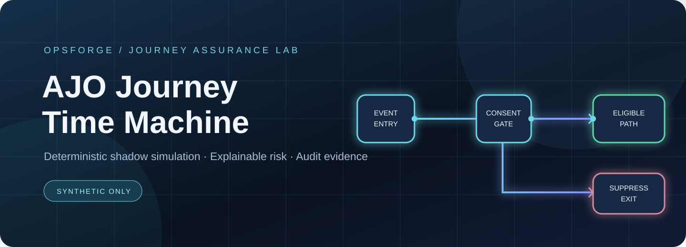

Journey flow
Inspect the simplified event-entry, consent-gate, eligible and suppression paths.

A deterministic shadow-simulation prototype for exploring consent decisions, opt-out handling, scenario impact and audit evidence — before operational workflows are considered.
Inspect the simplified event-entry, consent-gate, eligible and suppression paths.
Demonstrate fail-closed handling for pending, unknown, denied and opted-out synthetic profiles.
Explore local SHA-256 hash-linked run records and exportable JSON evidence.
This is an independent prototype. It does not connect to Adobe Experience Platform or Adobe Journey Optimizer, is not Adobe-certified, and cannot publish, pause, send or activate campaigns. It is not a complete AJO runtime emulator. Results are advisory; human review is required.
Use synthetic data only. Do not upload production customer records, identifiers, credentials or campaign exports. Local audit files are demonstration evidence, not an immutable enterprise audit store.